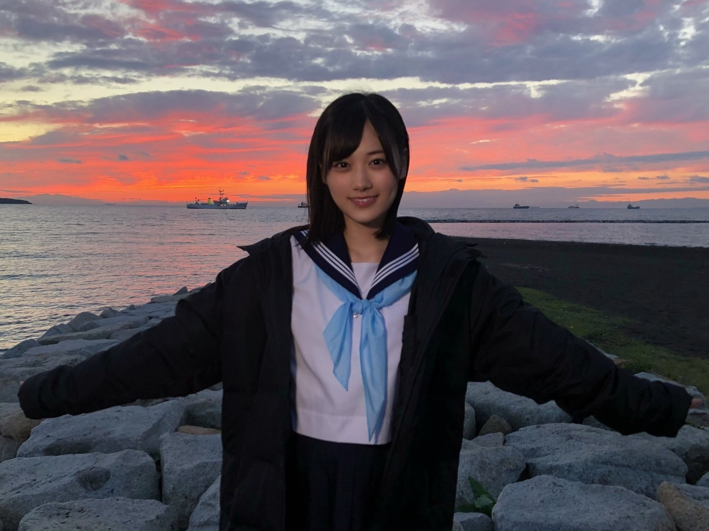
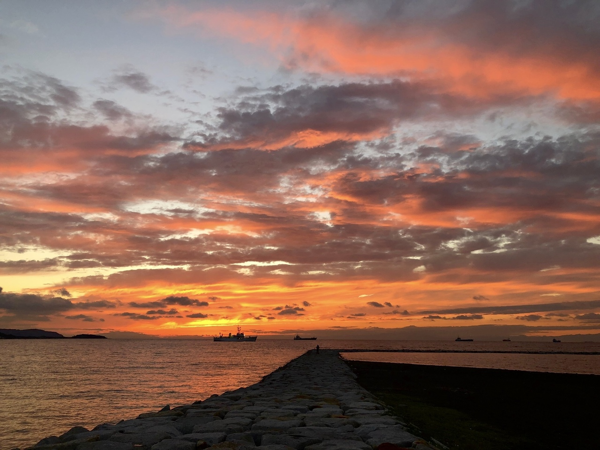

<div class="bd--edit">
<p><br/><br/><br/><br/><br/>皆さんこんにちは！<br/><br/>山下美月です( ˙꒳​˙  )<br/><br/><br/><br/><br/><br/>お久しぶりのブログになってしまいました<br/>2024年、皆様どうお過ごしでしょうか？<br/><br/><br/>最近の私はというと<br/>日々ライブの準備やドラマの撮影で<br/>室内にこもりっきりでして<br/>スタジオの窓際で光合成しようと<br/>しばらく陽に当たっていたら<br/>それが照明さんの置いたライトだと気づいて<br/>驚き桃の木気になる木でした<br/><br/>気分を切り替えようと<br/>部屋の模様替えもしてみたのですが<br/>全ての家具の採寸を間違えて<br/>逆にピッタリはまるという<br/>奇跡も体験いたしました<br/><br/>あ、カーテンの裾は10cm足りませんでした<br/>そんなこんなで2024年も楽しく過ごしていきましょう<br/><br/><br/><br/><br/><br/><br/><br/><br/><br/><br/>そして本日は大切な皆様へ<br/>私からお伝えしたいことがあります<br/>長くなってしまいますが<br/>最後まで読んでくださったら嬉しいです<br/><br/><br/><br/><br/><br/><br/><br/><br/>乃木坂46を卒業させていただくことを決めました。<br/><br/><br/><br/><br/><br/><br/><br/><br/>約7年半、本当にお世話になりました<br/>どんなに多くの言葉を並べても<br/>きっとこの感謝を皆さんに伝えきれません<br/>アイドルとしての日々は、私にとってかけがえのない宝物です<br/><br/><br/><br/>なんと言葉にすればいいのか<br/>どうすれば悲しませずにお伝えできるのか<br/>今日までずっと考えていました<br/><br/>アイドルとして叶えられた夢も<br/>叶えられなかった夢もあるけれど<br/>それでも毎日幸せでした<br/>もう悔いはない！と<br/>心から思えるようになったのが卒業を決めたきっかけです<br/><br/>新たな夢が見つかったとか<br/>ステップアップしたいとか<br/>分かりやすい理由が見つかればいいのですが<br/>私はアイドルになる事が夢だったので<br/>乃木坂46でこれ以上無い経験をさせていただいたと思っています<br/><br/>ようやく少し肩の力を抜いて生きることができるようになり<br/>一人の人間としてここから歩いていこうと<br/>前向きに決断しました<br/><br/><br/><br/><br/>乃木坂46は温かく居心地の良い場所で<br/>皆すごく優しくて楽しくて<br/>一人っ子で昔から一匹狼だった私に<br/>初めて守りたいものができました<br/><br/>先輩方が託してくださったバトンを<br/>落とさないように必死に走り続け<br/>気づけば大人になっていました<br/><br/><br/>高校の卒業式や地元の成人式には出ることができなかったし<br/>行きたかった大学のパンフレットももうどこかへ行ってしまったけれど<br/>"間違いなく私の青春はこの場所にあった"と<br/>胸を張って言うことができます<br/><br/><br/><br/><br/>13歳で足を踏み入れた芸能界<br/>そして乃木坂46のオーディションを受けたのは、17歳の夏です<br/>本当に、最後のチャンスでした<br/>これがダメだったらもうアイドルの夢は諦めようと心に決めたのを覚えています<br/><br/>そんな私を乃木坂46が救ってくれました<br/>このグループに人生を賭けると決心した瞬間です<br/><br/>歌もダンスも得意とは言えなくて<br/>私はアイドルには向いていないんだと<br/>ずっと感じてはいたけれど<br/>それでもこの仕事が大好きでした<br/><br/><br/><br/><br/>アイドルの世界は愛に溢れていて<br/>自分の存在価値をこの場所で初めて見つけられた気がします<br/><br/>何も出来ない人間だと思い込んでいた私に<br/>沢山の方が手を差し伸べてくれて<br/>どんなときも皆さんがいてくださったから夢を叶えることができました<br/><br/>こうして文字を綴る間にも<br/>ファンの皆さんの顔が次々と思い浮かびます<br/><br/><br/><br/><br/>オーディション審査中、<br/>まだ名前も分からない私に<br/>卒業するまで応援する！と言ってくださったこと<br/><br/>初めてセンターに立った時<br/>推していて良かったと自分以上に喜んでくださったこと<br/><br/>握手会の途中で涙してしまった時に<br/>並んでいらっしゃったファンの方々が笑わせてくださり、より涙が溢れたこと<br/><br/>美月ちゃんがいたから、生きていますと<br/>想いを綴ったお手紙をくださったこと<br/><br/>闘病していたファンの方が<br/>元気な姿で歩いて握手会に来てくださったこと<br/><br/><br/>二度と経験できないであろう思い出に<br/>振り返る度、胸がいっぱいになります<br/>このお仕事をさせていただけていなかったら恵まれていなかった<br/>皆さんとの出会いに感謝でいっぱいです<br/><br/><br/><br/><br/><br/>卒業後は少しお休みを頂いて<br/>自分のやりたいことは何か？<br/>もう一度立ち止まって考える時間が必要だと思っております<br/><br/>1人でこの世界を歩いていける程の自信は正直まだありませんが<br/>応援してくださる方々を笑顔にさせたいという信念は<br/>表舞台に立っている以上これからもずっと変わらないと思います<br/><br/>なので、<br/>どうか悲しまずに待っていていただけたら幸いです<br/><br/><br/><br/><br/>3月27日に発売されます<br/>35thシングルが乃木坂46として最後の参加になります<br/>メンバーやスタッフさんとの時間を噛み締めながら只今制作しております！<br/> <br/><br/>そして、卒業コンサートを開催していただけることになりました！<br/>アイドルとしての最後の日を<br/>皆さんと同じ空間で過ごせるのが<br/>本当に本当に嬉しいです<br/><br/>時期は5月を予定しております<br/>桜も散って、新緑の季節です<br/>そう考えるとまだまだ先のことのように思えてしまいますね<br/>詳細が決まりましたら、またお知らせいたします◎<br/><br/><br/><br/><br/><br/><br/><br/><br/><br/><br/><br/>頼もしい同期<br/>そして会う度に成長に驚かされる後輩たち<br/>今の乃木坂46が大好きです<br/>皆が輝き続けていくのを<br/>見守っていくのが今から楽しみです<br/><br/>これからも温かい応援を<br/>どうぞよろしくお願い致します<br/><br/><br/><br/><br/>そしてアイドルとしての残りの時間<br/>私の最後の願いは<br/>皆さんと1秒でも長く笑って過ごしたい<br/>それだけです<br/><br/>大好きなファンの皆さんと<br/>まだまだ幸せな時間を増やしたいです<br/>どうか、その日まで<br/>よろしくお願い致します<br/><br/><br/><br/> <br/><br/><br/><br/><br/><br/><br/><br/><br/><br/><br/><br/><br/><br/><br/><br/><br/><br/><br/><br/><br/><br/><br/><br/><br/><br/><br/>業者の<br/><br/><br/>卒業写真<br/><br/><br/>ばいばいっ<br/><br/><br/><br/><br/><br/><br/><br/><br/><br/><br/><br/><br/><br/></p>
</div>